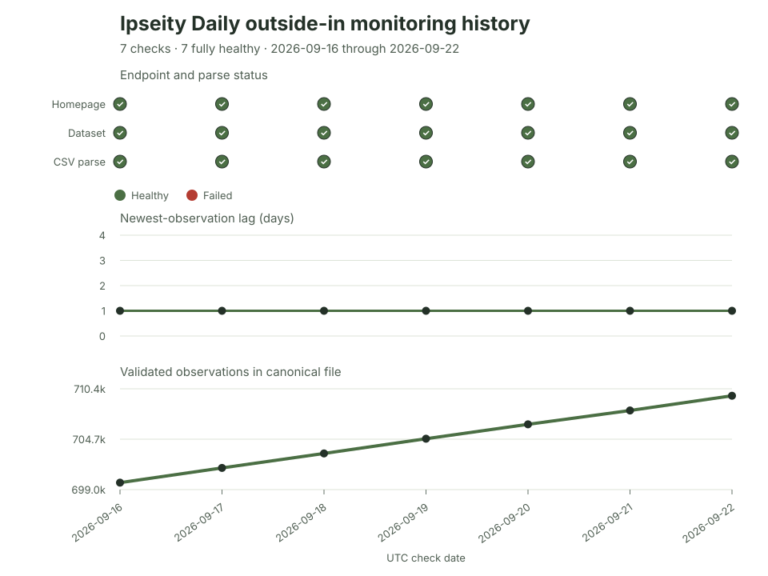

Ipseity Daily Pulse · 2026-09-22
Seven checks, one-day data lag
Seven healthy snapshots with one-day data lag are useful monitoring evidence, not an uptime estimate.
By Ceetown · 3 minute read
An open dataset is useful only if people can reach it and read it.
Across seven consecutive daily Ipseity Daily checks from September 16 through 22, 2026, the homepage responded, the canonical data file downloaded and parsed, and the monitor found no anomaly each time. The newest observation was one day behind every check date. Over the same sequence, the file grew from 699,835 to 709,659 Yes/No responses—9,824 additional observations.
That is a healthy seven-check run, not an uptime estimate. One snapshot per day cannot reveal interruptions between checks or establish long-run reliability. The result is still useful: it makes current data delivery visible, testable, and reproducible rather than assumed.
Source: Ipseity Daily download page

Evidence note
The figure uses the append-only data/monitoring-history.csv.
The first check occurred at 2026-09-16T20:47:07Z and the latest at
2026-09-22T10:08:02Z. Each row is one outside-in check, not continuous
telemetry. “Fully healthy” means the homepage was reachable, the
canonical file was retrieved and parsed, and the recorded anomaly was
none. The latest file contained data through 2026-09-21 and
had SHA-256
d516f950d2102c2a6a5d39ac6d76a1ad951b71cf4e3bebf57627d5ac87c01db5.
Snapshot note: This dated entry and figure are preserved from the stated check. Links to the cumulative report and aggregate tables may show newer data.